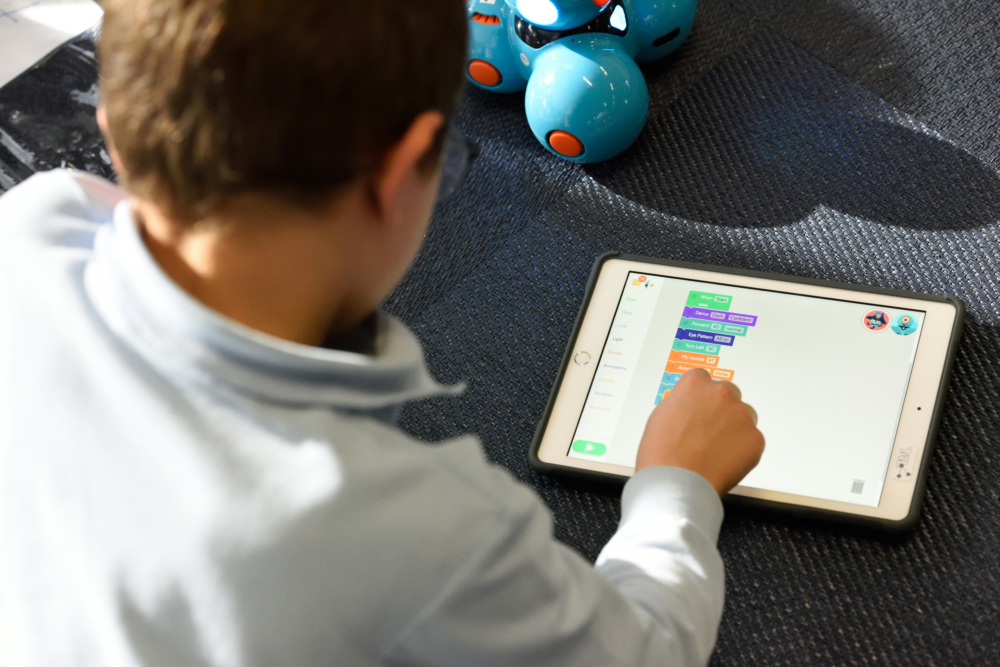
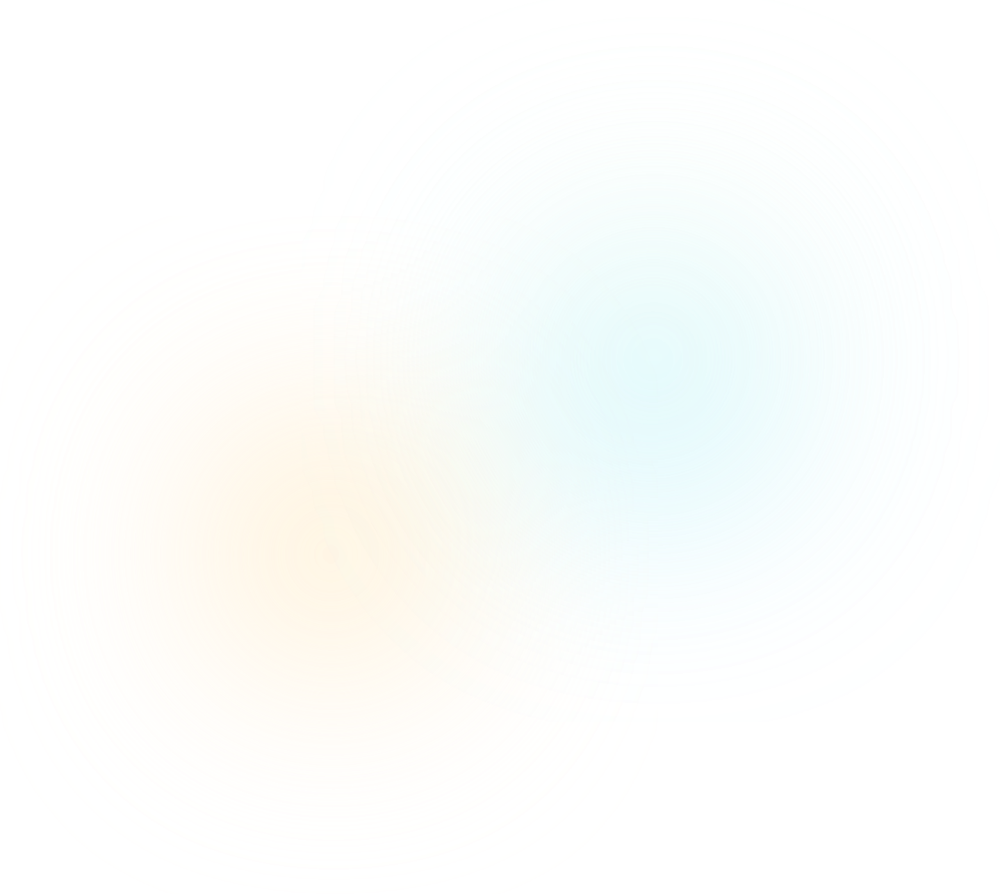
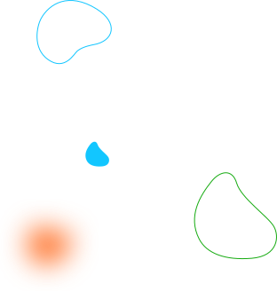
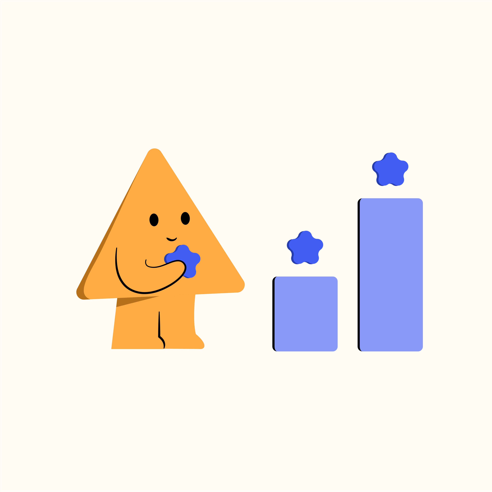
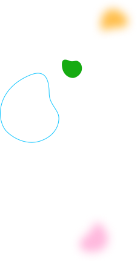

AI-powered assessments that write themselves
Generate standards-aligned questions in seconds, not hours.

Kodeit Ascend replaces guesswork with precision. Map assessments to standards, generate questions instantly, and watch school performance emerge from the noise.
Request a demo

Stop juggling spreadsheets and disconnected tools. Kodeit Ascend gives you a single source of truth for every standard, every assessment, and every student.

Generate standards-aligned questions in seconds, not hours.

Track mastery from CCSS to PISA with a unified taxonomy.

See growth trends, gaps, and opportunities across entire networks.

The AI engine reads your standards and writes the items. Aligned to DOK levels. Tagged to competencies. Ready for review. The machine does the heavy lifting so you can do the thinking.
Select any framework and the engine maps every question to the exact standard. No manual tagging required.
Generate multiple choice, short answer, essay prompts, and file upload tasks from a single interface.
Set the cognitive demand. The AI adjusts vocabulary, complexity, and structure to match your exact specifications.
Good tools do not shout. They simply make the job possible.
The machine scores the papers. You teach the child.
LearnAdaptive paths close gaps before they become failures.
LearnStandards mapped. Evidence collected. Accreditation ready.
LearnThe distance between intention and impact is just three moves.
Select your framework. The system aligns every standard, domain, and sub-skill automatically. The map is drawn before you begin.
LearnPush assessments to any device. The AI generates the items. The students show their work. The data flows back clean.
LearnWatch the dashboards light up with real performance trends. No waiting. No guessing. Just the truth you need to lead.
LearnThe first step is a conversation, not a commitment. Talk to an education specialist about a free pilot for your school or network.